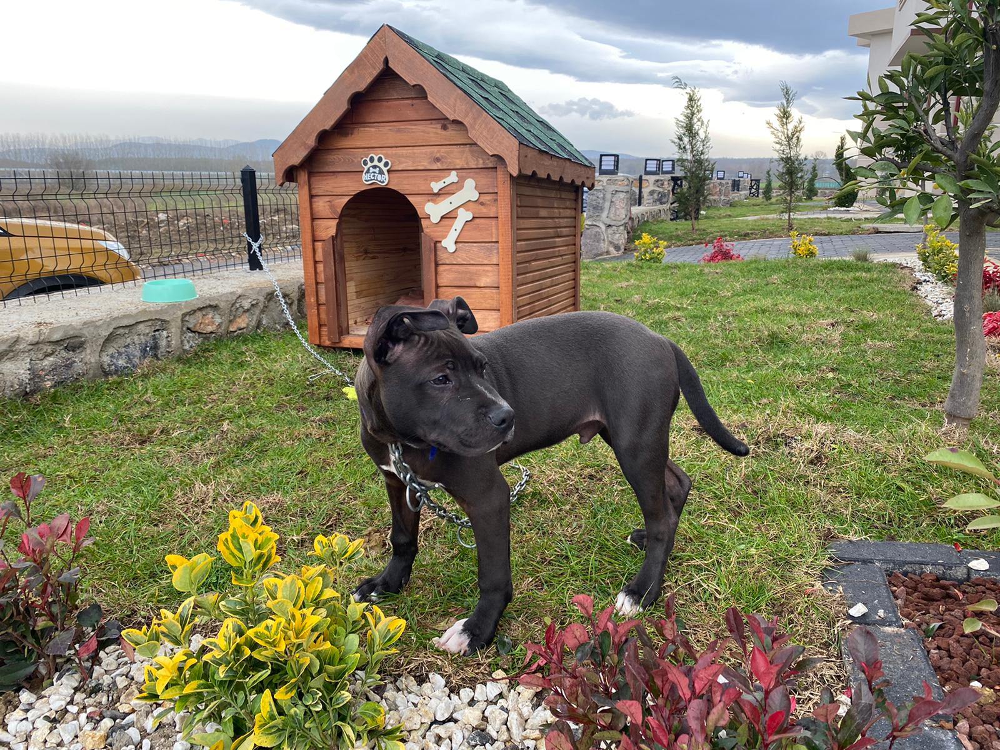

Arkadaşlarımla ve ailemle vakit geçirmek en sevdiğim şeyler arasındadır. Bir süredir olmasa da oyun oynarım. Anime izlemeyi; webtoon ve novel okumayı severim. Müzik dinlemek genelde beni rahatlatır. Tutkulu olmasam da futbol maçlarını izlerim. Dizimi sakatlamadan önce futbol, basketbol ve voleybol oynamayı severdim. Hala sevmeme rağmen yapmam en azından bir süre mümkün görünmüyor :)
Bir tane köpeğim var. Kendisi American Staffordshire Terrier'dir. Bir nevi pitbull kırması diyebiliriz. Adı da Hector. Gayet karizmatik bir isim bence.
